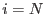
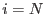
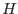
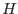

The weighting factor  in equations 1 and 3 prevents ugly distortions of the smoothed output
in equations 1 and 3 prevents ugly distortions of the smoothed output  near the ends of the range of
near the ends of the range of  at
at  and . This treatment is also desirable near holes in the mask. To prevent this `droop' in the output close to holes, equation 2 is modified to the following:
and . This treatment is also desirable near holes in the mask. To prevent this `droop' in the output close to holes, equation 2 is modified to the following:
(The specifications for  and  should be amended in analogous fashion.) It should be pointed out that this cosmetic improvement is achieved at the cost of a little less noise suppression in these channels.
and  should be amended in analogous fashion.) It should be pointed out that this cosmetic improvement is achieved at the cost of a little less noise suppression in these channels.
Similar costs are incurred by another appearence-enhancing feature of colsmooth, namely the ability to `paper over' holes in the mask which are significantly smaller than the width  of the convolver. The size of holes to be interpolated is provided via the integer parameter fillholewidth. The interpolation is implemented by employing two different masks: let's us call them
of the convolver. The size of holes to be interpolated is provided via the integer parameter fillholewidth. The interpolation is implemented by employing two different masks: let's us call them  and . The one (
and . The one ( ) that appears in equation 3.3.1 and the analogous equations for
) that appears in equation 3.3.1 and the analogous equations for  and is left unchanged. The other (), which appears in equation 4 and the analogous equation for uncertainties
and is left unchanged. The other (), which appears in equation 4 and the analogous equation for uncertainties  , is for the most part set equal to
, is for the most part set equal to  ; the exception being within stretches of contiguous channels of length=fillholewidth: within such stretches is set to `true'. The result is that
; the exception being within stretches of contiguous channels of length=fillholewidth: within such stretches is set to `true'. The result is that  (and
(and  ) within these stretches or gaps is calculated as a weighted sum of only those values of
) within these stretches or gaps is calculated as a weighted sum of only those values of  that fall outside the gap. The results are acceptable provided the sum of those parts of the convolver that fall outside the gap onto the valid parts of
that fall outside the gap. The results are acceptable provided the sum of those parts of the convolver that fall outside the gap onto the valid parts of  is not too small a fraction of the total sum of the convolver.
is not too small a fraction of the total sum of the convolver.
Note that the default setting of fillholewidth=0 disables any hole-filling.